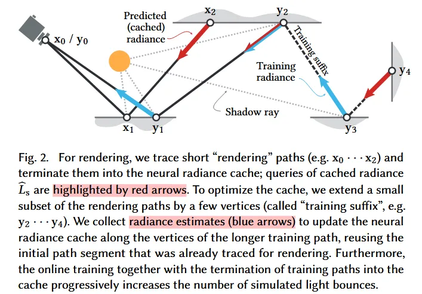
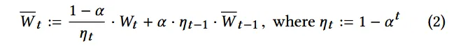
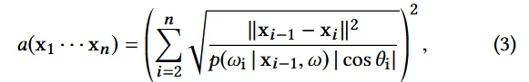
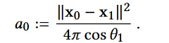
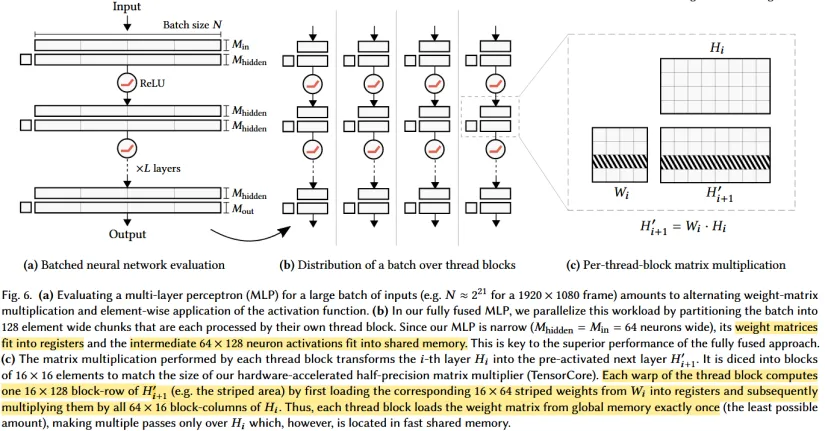
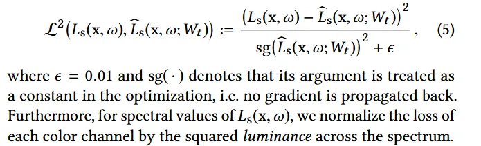
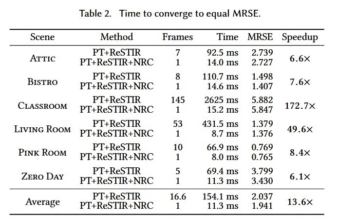

Radiance caching
基本思想为存储空间中某个位置的radiance，记为$ L(x,\omega_i) $来模拟GI的效果，也是现在引擎中常用的GI方法。存储方式也多种多样，用3d texture，SH（球谐函数）等。该文章的方法基本思想也基于此，即用neural network来存储radiance cache（此想法并非文章首次提出）
neural radiance最早来自Ren et al的“Global Illumination with Radiance Regression Functions”
文章还介绍了许多GI相关的方法，如预计算，动态光源，或者path guiding等（这部分主要是提高采样效率，并且因为利用历史采样结果，不太适合动态场景，主要用在offline render里面）
NRC：文章通过链式更新（类似Q-learning，这个类似rl的做法比较有趣，还有一些细节处理也和rl中的做法比较像）实现在线更新网络，从而适应动态场景，并且用fully fused network获得极致的性能
Overview
整体是path tracing的框架，分为render和training两个部分，render使用short-path（参考x0-x1-x2，也就是1-bounce），主要通过$ \hat{L_s} $获取x1的间接光照，剩下部分其实可以自由搭配，文章中使用LightBVH+SS ReSTIR计算直接光照+MIS。training则在render的基础上再多走两步（参考y0-y1-y2-y4）,然后用链式更新的方式进行在在线网络更新。
链式更新：
以y1点为例：
$$
\hat{L_{y1}’} = (\hat{L_{y2}(\omega_i)}*w_1 / p_1 + L_{direct} * w_2/p_2) * f(\omega,\omega_i)
$$
- 优势：相比1-sample采样，这种用neural network存储的方式噪声更低，虽然会引入bias。并且这种链式更新模式实际存储的是infinite bounce。
- 劣势：Training suffix的最后一个结点可能从未更新过，引入明显的误差，导致画面出现抖动。以及这种在线模式的拟合和相机的移动强相关，而对于相机没有频繁出现的位置，网络无法进行有效的更新，使得网络获得的场景信息不完整。
Temporally Stable Cache Queries
因为场景一直在动态变化，并且让网络快速收敛，会使用较大的learning rate，这就导致模型参数的变化会非常剧烈，为了模型访问的稳定，文章在进行render时不直接访问现在的模型参数，而是保留一个EMA的副本
这种分离训练和查询的方式在rl也经常使用，被叫作soft update
Path Termination
path的结束条件使用一个heuristic，文章中叫area-spread of path vertices
 结束条件为$ a(x_1 \cdots x_n) > c \cdot a_0 $,大致意思是采样范围（大范围的间接光照）足够大时能够模糊模型在小范围的拟合误差
Amortization in a Real-time Path Tracer
我们还需要决定哪些path用于training，为了达到60fps的标准，每次16.67ms的预算，所以帧能够进行的训练量几乎是固定的。为了让training尽可能均匀，将viewport分为许多tile，并随机从每个tile中选择一个path进行延长来获得训练用的record（$ \hat{L} \text{ 和 } \hat{L}’ $）.收集的所有training record会分为s个batch，每个batch里l条record，每次update取一个batch，文中给出配置为s=4，l=16384。为了维持稳定的更新（s和l恒定），tile的大小根据每次产生的training record数量动态调整。
Input Encoding
realtime的限制导致不能使用很复杂的网络，为了拟合更复杂的关系，需要先对输入feature进行映射（获取feature）
padding到64 dimensions之后输入之后的mlp网络
FULLY FUSED NEURAL NETWORKS
为了做到实时，文章使用一个pass来完成整个网络的推理（fully fused）。因为mlp实际上就是矩阵乘法，所以文章针对这部分进行优化。

这部分图中的表述会比文字清楚很多，所以尽可能参考上图或者原文，基本思想就是减少global memory traffic，即参数到core仅load一次，通过调整thread block的大小使shared memory能够容纳中间结果（H），并且将参数保存在register中复用从而实现矩阵乘法。对于training阶段因为需要更新参数，所以必然会有额外的global memory访问。并且为了计算整个参数矩阵的gradient，文章使用cutlass来做矩阵乘法。而多余的计算与global memory traffic会让训练过程比推理慢4-5x。
Other Details
- Achitecture: 7层fully connected layer，hidden layer为64 dimensions，输出rgb channels
- Reflectance factorization：就是在输入中加上diffuse reflectance和specular reflectance
- High-performance primitives for encoding：因为one-blob encoding和frequency encoding计算量消耗太大，所以采用Quadratic kernel替换Guassian，sine function替换triangle wave
- **Relative loss: **训练用的loss
- Optimizer：Adam
Evaluation
相比单纯的PT+RESTIR的speed up还是很明显的，更多具体的效果可以参考原论文与supplementary video
- limitations
- 尖锐变化的细节把握不好（不作为网络输入时，如接触阴影与焦散）
- 轻微的条纹artifact
- Comparision with DDGI
- DDGI为了保证性能和低噪声，在第一个diffuse interaction结束path，但会缺少AO造成可见的误差，而额外的AO pass会损失一定的性能。
- NRC在一定性能和噪声牺牲下保证最好的视觉效果（无视material统一的path termination heuristic）